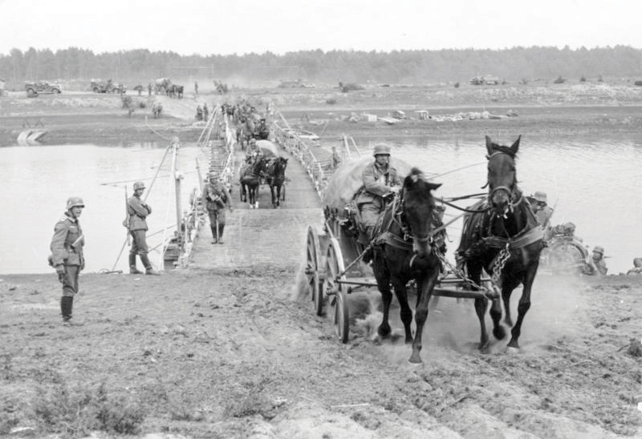
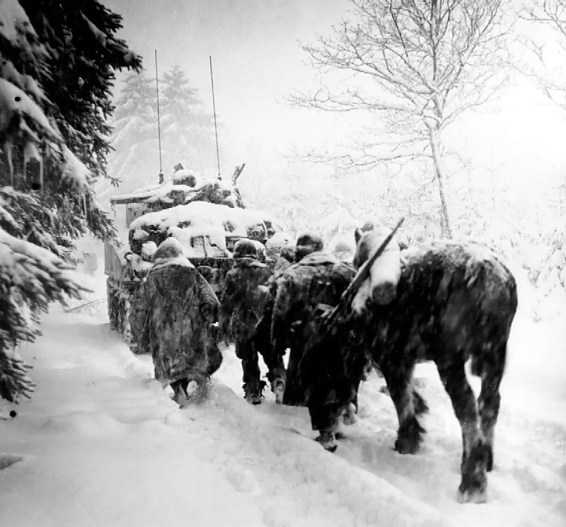
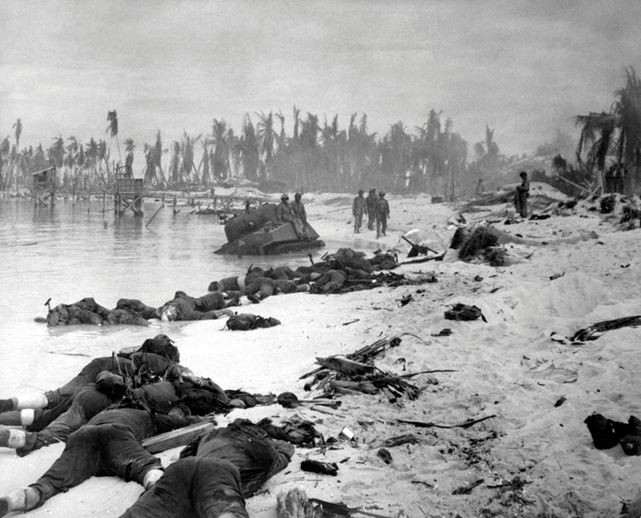

Hitler’s strategy was based largely on attacking in places German enemies did not expect attack. As a result, German offensives against Moscow and Leningrad were secondary to the German offensive at the Battle of StalingradOne of the major turning points of World War II, the Battle of Stalingrad began in August 1942 when the German army sought to seize control of the city of Stalingrad. Although they controlled much of the city, Soviet forces launched a counteroffensive that surrounded Stalingrad and forced 100,000 German troops to surrender.. Hitler focused his efforts on Stalingrad for three main reasons. First, it was named after his archrival and the leader of the Soviet Union. Second, the city was a leading industrial center. Last and most importantly, its location between the oil reserves of the Caucasus and the Volga River meant that control of the city meant access to oil. Control of the city would secure access to the oil-rich regions south of Stalingrad as well as the Volga River from just south of Moscow to Stalingrad.
Figure 8.18

Stalingrad was strategically located on the Volga River between the Black Sea and the Caspian Sea. As this map indicates, German troops approached from the west and hoped to capture the city and control this vital gateway to the oil-rich Caucasus region Southwestern Asia.
The German offensive began in the summer of 1942 with artillery attacks and bombing raids that destroyed most of the buildings. Believing that preventing civilians from leaving the city was critical to preventing his officers from surrendering the town that bore his name, Stalin positioned troops across the river with orders to fire upon soldiers and civilians who sought to flee east. Stalin meanwhile sent increasingly frustrated dispatches to Roosevelt, asking when US forces might open a second front in Europe to aid his overwhelmed armies. Although the first US bombing raid on German-held territory occurred in August 1942, these bombs caused minimal damage and US troops would not enter France until the summer of 1944.
As a result, the Russians continued to endure the brunt of the Nazi offensive throughout 1942. By October, the Germans controlled the majority of the city. Despite what appeared to be an inevitable German victory, German success actually played to the Russian strategy. Understanding that they could not defeat the Germans in the open, Russian commanders welcomed an urban battle where the battle lines between the two armies would be blurred. Historians have labeled the strategy as “hugging the enemy,” as Russian commanders realized that an urban war where Germans and Russians fought hand to hand among a civilian population neutralized the advantages of the technologically superior German forces. The Luftwaffe and German artillery could not fire upon the city if German troops occupied the majority of Stalingrad, thereby allowing Russian fighters disguised as civilians to move throughout the destroyed city and fire upon German troops.
With the majority of the German army inside of the city, the Soviets launched a massive counterattack with fresh divisions of Russian troops storming in from all directions to surround the German army inside the city. Hitler ordered his troops to fight to the last man; but given the cold weather and their increasingly untenable situation, nearly 100,000 Germans surrendered. The Soviets lost more than a million lives in the entire campaign, but the German surrender proved to be the turning point of the Eastern Front. Following the German defeat at Stalingrad, Hitler’s momentum was halted as winter set in. Germany’s supply lines were perilously thin and the Russian winter made it difficult to transport supplies. Most important, German forces failed to quickly overwhelm the much larger Russian army that now prepared for a counterattack along the 1,000-mile front from Stalingrad to St. Petersburg in the north.
Both before and after the attack on Pearl Harbor, Japan captured many areas on the coast of Asia, such as Vietnam, as well as numerous islands throughout the Pacific. In the Philippines, US and Filipino troops were surrounded by Japanese invaders and retreated to Corregidor Island. The situation went from desperate to nearly hopeless by March 1942. Ten thousand men had perished, and Washington predicted that the entire US garrison might soon be captured. The navy had no method to evacuate such a large force given Japan’s control of the South Pacific at this time, and so President Roosevelt ordered General Douglas MacArthur to abandon his men in the Philippines and reestablish a command post in the safety of Australia. The navy could not provide escape for the 70,000 US and Filipino soldiers who were subsequently captured and forced to walk eighty miles without food or water. Although many of the Japanese troops also lacked supplies on this journey, the actions of many Japanese who bayoneted and clubbed US soldiers during what would soon be known as the Bataan Death MarchA forced march of 75,000 US and Filipino prisoners of war across the Bataan Peninsula. The Japanese captors had little food or water that they could provide to the prisoners. The march is considered a war crime because many of the captors chose to beat or bayonet their prisoners, a practice that may have killed as many as a quarter of the men to die before reaching their destination. demonstrated the cruelty that had been inflicted by the Japanese on their enemies. Nearly a third of the survivors of the march perished in prisoner of war camps due to malnutrition and torture.
There was little that Americans could do in response to Bataan given the state of the Pacific fleet. Attacks on Japanese-held territory could only be launched from aircraft carriers, but America could not send these ships near Japan or any island controlled by the Japanese or they would easily be destroyed. In April 1942, the navy commander James Doolittle engineered a small-scale surprise attack on Tokyo that was later named the Doolittle RaidA small-scale bombing raid against the island of Japan launched from an aircraft carrier in retaliation for the attack on Pearl Harbor. The Doolittle Raid was so named not because of the minimal damage of sixteen bombers that carried more auxiliary fuel tanks than bombs, but rather because of the intrepid spirit of the mission’s commander James Doolittle and his men.. The navy modified sixteen bombers so they could fly all the way to Japan. There was just one problem: to keep the aircraft carrier out of range of Japanese carriers, the pilots would have to fly halfway across the Pacific, crash land in China, and fend for themselves. Doolittle and his men also understood that bombers were not designed to take off from aircraft carrier decks. Understanding all these risks, these men successfully flew over Japan and dropped a few small bombs that damaged little more than Japan’s sense of invulnerability. Given the disastrous events of the Pacific war up to this time, the Doolittle Raid at least let Americans know that their navy had responded to Pearl Harbor with an attack of their own.
Figure 8.19
Despite modern impressions of fully mechanized German Panzer units that combined tanks and armored infantry units, very few of Germany’s infantry units were motorized in 1939. German supply trains were dependent on horses and mules, as were the British, French, and Russian armies at this time.
By May 1942, Americans had more substantial news to celebrate when US carriers forced the Japanese to retreat in the Battle of the Coral Sea. The victory was bittersweet, however, as the United States lost more ships including an aircraft carrier. Japanese naval officers hoped to destroy the remaining carriers and complete their initial objective against Pearl Harbor of crippling the Pacific Fleet. Unknown to them, however, American intelligence had broken one of the Japanese codes and were able to communicate many of their battle plans to Admiral Chester NimitzCommander of the US Pacific fleet during World War II, Nimitz became the highest-ranking officer in the navy when he was promoted to Fleet Admiral and would later accept the surrender of Japanese forces aboard the USS Missouri.. In May 1942, Nimitz learned that the Japanese carriers were among a fleet of nearly two hundred ships that were heading toward the tiny but strategic US base on Midway Island. If Japan succeeded in taking Midway, the Japanese could use the island to launch attacks against Hawaii, which the Japanese believed would force the Americans to end the war on their terms.
Figure 8.20

The red line in this map depicts the extent of territory controlled by the Japanese prior to the American victory at Midway. After nearly eliminating the Japanese aircraft carrier fleet, the US Navy and Marine Corps began their offensive.
Nimitz only possessed two undamaged aircraft carriers, which were in the South Pacific. In addition to the Yorktown, a third carrier that was heavily damaged, there was also Saratoga, which was undergoing major repairs and would not be available. Crews raced to repair the Yorktown while Nimitz ordered the scattered US fleet to intercept the Japanese force. Given the numerical superiority of the Japanese fleet, an offensive was risky as it meant the two or three US carriers would both be outnumbered. Nimitz had the advantage of knowing Japan’s plans, however, while his Japanese counterparts believed that the US carriers were likely not in the area. During the Battle of MidwayA major turning point in the Battle of the Pacific, US forces sunk four Japanese aircraft carriers and defended their airfield on the small island of Midway. US forces had been forewarned of the Japanese attack against Midway due to code-breakers, and the US Navy lost only one carrier., the additional planes launched from the three US carriers surprised the Japanese fleet and sunk all four of its carriers, while the Americans lost only the Yorktown. The Japanese fleet now only possessed two aircraft carriers, and the Americans still held three. Midway proved the turning point in the Battle of the Pacific as the Japanese fleet could no longer threaten US bases in the central Pacific. Yamamoto’s hope that the war with America would be quick was now dashed. He was forced to retreat to within Japan’s defensive perimeter and prepare for a long war against an industrial power that launched seventeen large and eleven medium carriers in the next two years.
In the first year of the war, German submarines had an easy time sinking Allied ships in the Atlantic. This greatly limited America’s ability to provide supplies for Britain and Russia and increased the dangers of sending troops across the Atlantic. As they had done during World War I, US forces utilized the convoy system, which grouped many ships together escorted by fleets of destroyers armed with depth-charges. These convoys would prove even more effective due to the British and American invention of sonar, which was able to detect submarines from miles away. Sonar and the convoy system combined to allow US warships to destroy more German submarines than German factories could produce. In addition, supply and attack vessels were rolling off American assembly lines at astonishing rates that gave the Americans supremacy in this ongoing Battle of the AtlanticAn ongoing contest between the German navy and Allied convoys throughout World War II, the Battle of the Atlantic featured tens of thousands of Allied cargo ships and troop transports that were escorted across the Atlantic Ocean. The goal of the German navy was to sink as many of these ships as possible and, by so doing, force the island nation of Britain to surrender for lack of supplies and/or convince Americans that the war was too costly.. The 2,700 Liberty Ships America built between 1941 and 1945 represented three times more cargo-carrying capacity than all of the 3,500 merchant ships the Germans sank during the entire war. By 1943, the US Navy effectively controlled the Atlantic Ocean, allowing US military officials to concentrate men and material in Britain and North Africa in preparation for major offensives against Germany and Italy.
Italy entered World War II after Hitler had nearly completed his conquest of France, yet in many ways, Italian aggression helped to initiate World War II and spread the conflict from Europe to Africa. In 1934, Italian dictator Benito Mussolini initiated a confrontation between his forces in the Italian colony of Somaliland and border guards in neighboring Ethiopia. Ethiopia had successfully defended itself against a previous invasion by Mussolini and remained the only independent African nation besides Liberia, which had been established as a refuge for former American slaves. The League of Nations condemned Italy and attempted to negotiate a peaceful resolution, yet the League had no military force. Mussolini used the border clash as a pretense to invade Ethiopia in 1935, and the League offered little more than verbal support for Ethiopian leader Haile Selassie’s attempts to defend his nation. The League eventually recommended that its members refuse to trade with Italy. Had these nations and others such as the United States applied economic sanctions against Italy, Mussolini might have been forced to reconsider the Italian invasion. Instead, the only significant aid came from African Americans who raised money for weapons and medical supplies.
After Italy and Germany sealed their alliance in 1940, the Axis powers controlled North Africa. Given the immense coastline and vast deserts of North Africa, the anti-Nazi sentiment of the local population, and the fact that the French still controlled the African colonies of Morocco and Algeria, many military planners believed North Africa provided the best opportunity to land Allied troops and open a second front against the Germans. In August 1941, Roosevelt and Churchill met aboard a US naval vessel and discussed this strategy. They also composed a list of eight principles they hoped the world would follow should Nazi Germany be defeated to prevent future conflicts. This agreement was referred to in the following years as the Atlantic CharterAn agreement made between Franklin Delano Roosevelt and Winston Churchill prior to America’s entry into World War II. The agreement articulated the goals of the United States and Britain in their conflict against Germany and stipulated that neither nation would seek to increase its territory once Germany was defeated. and called free access to markets, disarmament, and democracy and self-determination for those lands presently occupied by the Axis Powers. Critics pointed out that these principles were not extended to British overseas colonies or the US-controlled areas such as the Philippines.
Churchill and Roosevelt met regularly once America joined the war against Germany, and both agreed in 1942 that their militaries were not yet prepared to launch an attack on German-occupied France. The US military settled upon Operation TorchThe British and US invasion of French North Africa in November 1942. The intent of the campaign was to land forces on the French colonies of Morocco and Algeria in preparation for an attack against Axis forces in Tunisia., an invasion of French North Africa under the command of General Dwight D. EisenhowerFive-star general and Supreme Commander of Allied forces in Western Europe during World War II. Eisenhower directed the Normandy Invasion on D-Day and the subsequent Allied campaigns in France and Germany. Regarded as a war hero, Eisenhower became president of Columbia University before agreeing to join the Republican Party and accepting their nomination for US president. He and running mate Richard Nixon defeated Democrat Adlai Stevenson in the 1952 and 1956 elections.. The goal of this operation was not to defeat the officially neutral French, but to land troops on the continent and push east against German forces on the northeastern corner of Africa. More than 100,000 US and British troops landed in Morocco and Algeria in November 1942. The landings were poorly executed and would have led to horrific casualties had they not been initiated against French colonial commanders who ordered token resistance so as not to violate the orders of Hitler’s puppet government in Vichy. The French actually viewed the Allied troops as potential liberators and did what they could to covertly help the British and the Americans as they moved east in pursuit of Germany’s Afrika Corps commanded by Erwin RommelGerman Field Marshal who led North African forces to several victories against Allied forces despite tremendous disadvantages. His ability to delay the Allied victory over his Afrika Corps led to the nickname “The Desert Fox,” and he is widely regarded as one of the ablest military commanders during World War II. Many believe that Rommel was ordered to commit suicide after the war turned against Germany and after he was implicated in a 1944 plot to kill Hitler.. US troops continued to arrive in North Africa, and they vastly outnumbered Italian and German armies until what remained of the Afrika Corps surrendered in May of 1943.
The Allied victory in North Africa resulted in US and British forces holding Tunisia, just south across the Mediterranean, from Mussolini’s Italy. Allied forces were hesitant to attack the strongly entrenched German army in France and believed that Italian forces would be much easier to defeat. Roosevelt understood that his arsenal of democracy was still under construction and believed that a direct offensive against German-occupied France would lead to unacceptably high casualties. Instead, he and Churchill planned an attack against Italy, which they derisively labeled “the soft underbelly of the Axis.” The Allies began with a successful attack against Sicily but failed to spread their invasion to Italy as quickly as they had planned due to German reinforcements. However, as US troops began to arrive in Sicily in large numbers, the Italian people rebelled against the leadership of Mussolini and his alliance with Hitler. The Italians forced Mussolini into exile, and the new Italian government aligned itself with the United States and Britain as US troops entered Italy in September 1943. Now that the Italians were fighting against the Germans, Hitler treated Italy like conquered territory. He rushed more troops southward to prevent the Allies from advancing through Italy and toward Germany. The “soft underbelly” of Europe featured difficult mountain terrain, which greatly aided the Nazi defenders. The Allies finally liberated Rome in June 1944. However, German troops continued their resistance, and it quickly became clear that the Allied path to Berlin would have to go through France rather than the narrow mountain corridors of Italy.
The Western Allies had repeatedly assured Stalin that they would attack German-occupied France, which would relieve pressure from the Soviet Red Army by requiring Hitler to transfer troops away from the Eastern Front. Given the codename Operation Overlord, the campaign to land US and British troops on the French coast presented US forces with the greatest challenge of the war. The landing would be heavily opposed by German defenders throughout the Atlantic Wall. This line of coastal defenses featured fortifications manned by artillery, machine guns, tanks, antiaircraft guns, and divisions of well-rested German soldiers. As a result, the Allies built up a massive invasion force and even a second “dummy” invasion force to distract the Germans from the actual invasion. Double agents, false radio transmissions, and an armada of hollow wooden models resembling ships, tanks, and planes convinced the Germans that the main attack would occur at Calais. The ruse worked because Calais was the most logical choice given its proximity to Britain and the narrowness of the British Channel at this point. In addition, US paratroopers landed behind enemy lines to destroy communication lines, spread misinformation regarding the attack, and soften the German defenses.
The much-anticipated cross-channel invasion from Britain to German-occupied France occurred on D-DayAn amphibious landing of US and British forces along a fifty-mile coastline in Normandy, France, on June 6,1944. German defenders enjoyed fortified positions, but Allied forces quickly overwhelmed the German defenders and secured a beachhead that was used to land more troops and heavy equipment., June 6, 1944. The invasion occurred in a region of France known as Normandy and involved thousands of landing craft, 600 warships, and 12,000 planes. Paratroopers belonging to the 82nd and 101st Airborne Divisions landed behind enemy lines the night before to disrupt communications and prevent or delay German reinforcements. The entire weight of the British and US navies and air forces unleashed a constant barrage of fire on the German defenders, while wave after wave of infantry stormed five beaches. These men ran directly into the teeth of the German army and the million rounds of ammunition fired by entrenched defenders.
Figure 8.21

The D-Day invasion took place in the highlighted region of Normandy. Numerous efforts were made by US forces to convince the Germans that the attack would take place near Calais, France, which seemed a logical choice given its location near the British coast.
The success of the operation was due to the heroism and sacrifice of these first waves of troops who secured the beach against mines and German machine guns. Given the overwhelming superiority of men and equipment, the Allies could now land at Normandy; US and British soldiers were able to break through the German defenses and push inland. By the first day, 150,000 men had cleared a tiny strip of the coast and prepared to confront the German reinforcements that were en route. In the next two months, a million US and British troops would arrive in France and enter the fight against the retreating German line. In August 1944, US soldiers under General George S. PattonA leading US general during the Allied campaigns in North Africa and Sicily, Patton led the US Third Army in its rescue of the US troops surrounded during the Battle of the Bulge. Patton is most remembered for speaking his mind and his aggressive style of personal leadership. reached Paris. The Allies controlled most of France by October. The US advance also reduced the number of troops Hitler could deploy against the Soviets, who continued their advance toward Germany from the East.
Americans were elated to hear of the tremendous success of D-Day. But, for the families of those soldiers who paid the ultimate price, the invasion was bittersweet. The news also influenced the 1944 election. Roosevelt hid his declining health and nominated the conservative Democrat Harry Truman as his vice president to help balance the ticket and attract moderates. The Republicans responded by nominating the popular New York governor Thomas Dewey. Dewey was a popular governor who had risen to fame as a lawman who secured convictions against several leading figures in organized crime. Many voters favored Dewey and had increasingly grown frustrated with the domestic policies of Roosevelt, especially his unpopular attempts to raise taxes. However, given the overwhelming success of America, both economically and militarily, and the continuing uncertainty of the war, many undecided voters chose to keep Roosevelt in office. Roosevelt won the election with 53 percent of the popular vote, a much closer election than his three previous landslide victories had been. The 1944 election demonstrated a conservative shift of US politics that would continue after the war was over. Yet most Americans in 1944 still supported Roosevelt and the New Deal.
Figure 8.22

Soldiers in the first waves of the Normandy Landing faced gunfire from entrenched German positions on D-Day. This famous photo gives a first-person view of what troops saw when the door to their landing crafts opened on the morning of June 6, 1944.
As the election results were calculated, Allied troops were approaching the German border. Hitler responded with a counterattack designed to break through the Allied line. Hitler believed that if his forces could somehow slice through the Allied line and then turn north, he might isolate, surround, and capture several US and British divisions. Hitler recognized that this action alone would not break the Allied juggernaut, but he would plan on using the hundreds of thousands of men as hostages. With the lives of so many men at risk, Hitler planned on using these prisoners of war as a bargaining chip to force the Allies to end the war and allow Germany to keep some of the lands it had conquered. Due to the rough terrain and harsh weather in the Ardennes, the Allies were surprised by and unprepared for the German counterattack. Allied forces rallied and waged a fighting retreat, holding the line against the German onslaught. At their furthest point of penetration, German forces pushed fifty miles west in the center of the battlefield, which created a bulge in that line. As a result, the Ardennes Offensive became known as the Battle of the BulgeA German counteroffensive in December 1944 meant to pierce Allied lines in the dense terrain of the Ardennes in Belgium. The Germans failed to cut through the line; instead, they merely pushed the Allies backward, which created a “bulge” along the front. By late January, Allied forces had successfully pushed back east and resumed their offensive toward Berlin..
Figure 8.23
Soldiers belonging to the 82nd Airborne Division advance in a snowstorm during the Battle of the Bulge.
But the Germans did not control the entire bulge. In the very center of German-captured territory, near the small Belgian city of Bastogne, the men of the 101st Airborne among other units had formed a defensive perimeter and were still holding out. The German commander expected that these men would recognize the futility of their position and surrender. In the boldest move of the army’s darkest hour, these soldiers refused the German commander’s guarantee of safe quarter as prisoners. Instead, the men, who would soon earn the nickname “Battered Bastards of Bastogne,” held their position against the much larger force that surrounded them. Their backs against the wall, black and white troops fought shoulder to shoulder for the first time in the war. Harsh weather prevented aircraft from reaching the men, but hundreds of soldiers and physicians volunteered to be dropped into the beleaguered combat zone by glider, carrying with them vital medical supplies and ammunition. By January, Patton’s army reached the trapped US Army and flattened the bulge.
Hitler gambled on halting the Allied advance through a counteroffensive. The failure of this attack left his forces depleted and low on fuel and supplies. Allied forces quickly resumed their momentum and crossed the German border in March 1945. Within six weeks, Russian forces were closing in on Berlin from the east while the United States, Britain, and the reconstructed French army approached from the west. In late April, the two armies met, and their leaders apparently decided that the Russians should have the honor of taking the city of Berlin given the millions of casualties they had endured prior to America’s entry into the war. Hitler committed suicide rather than surrender, leading German civilian officials to accept the Allied demand for unconditional surrender on May 8, 1945. The day was celebrated across America as Victory in Europe Day or V-E DayThe Germans surrendered on May 8, 1945, and this day was celebrated as Victory in Europe Day throughout the United States. Even as the nation greeted the news that the war in Europe was over, Americans braced for what many predicted would be a horrific and enduring battle in the Pacific.. US forces reveled with the British and French allies before redeploying forces and focusing the entire might of their arsenal in the continuing war against Japan.
The Pacific front was unique in the way that racism colored the views of Americans and Japanese toward one another. Most American GIs maintained respect for Germans, Italians, and the French throughout the duration of the war. This did not prevent atrocities on either side, nor did it prevent aerial attacks against cities. Yet neither side expressed the desire to annihilate one another as a people—a common theme of both US and Japanese rhetoric in regard to “the other.” Propaganda and popular opinion on both sides frequently portrayed the enemy as subhuman, even nonhuman. The Japanese viewed themselves as members of a pure and superior race in contrast to the hedonistic Americans who they believed were devoid of their own culture and heritage. Like leeches, many Japanese believed, Americans absorbed the worst traits of their composite races. As greedy Capitalists, Americans had also profited from the blood of Europe and Asia in each previous war. Americans portrayed the Japanese as animals or vermin, primitive and pitiable while simultaneously devious and malevolent. Hitler and Nazism, rather than the German people, became the symbol of evil in the war in Europe. However, the Japanese as a race was the enemy in the minds of many Americans.
The Pacific theater was also unique because of the vastness of the ocean in which it was fought. Japanese troops had established airbases on islands throughout the Pacific. As a result, US forces could not simply hope to capture one island near Japan because their invading fleet would become an easy target for thousands of aircraft from neighboring islands. The only way to proceed was to capture, or at least isolate, each of the islands Japan controlled one by one, from east to west. The overall US strategy was called “island hopping,” moving ever westward and closer to the main island of Japan. Each new island and airfield they possessed could be used to stage an invasion of the next island until the US forces reached mainland Japan.
Following this strategy, 19,000 marines stormed Guadalcanal and two smaller isles within the Solomon Islands in August 1942. Guadalcanal was strategically located at the furthest extent of Japan’s island possessions, and seizing control of it would provide the US military with a base of operations from which it could launch future offensives. The battle for Guadalcanal became one of attrition against the resolute Japanese defenders. Due to the estimated losses of taking every island in this manner, the navy modified its strategy. Some of the better-defended islands could be skipped, or “leap-frogged” as General Nimitz called the modified island-hopping plan. If the Japanese maintained control of one island but each of the nearby islands was captured, the navy could simply surround that island with battleships to prevent any supplies from arriving. This strategy preserved US lives by starving the Japanese defenders into submission or death. Even when the Japanese persisted and survived, the strategy of isolation simply made the islands they held irrelevant. Using each newly captured island as a base, the US military launched additional attacks on other islands across the Pacific as it moved steadily toward Japan throughout 1943 and 1944.
Figure 8.24

This battle map of the entire Pacific shows the US strategy of “island hopping.” The navy and marines moved westward toward Japan, capturing islands from entrenched and determined Japanese soldiers as they went.
US forces regained control of the Philippines in October 1944 during the Battle for Leyte Gulf. By this time, the Japanese had resorted to suicidal “kamikaze” missions where pilots flew planes loaded with bombs directly into US ships. As a result, Americans needed more than just aircraft carriers; they needed island-based airfields that could not be sunk by kamikaze attacks. They also needed large supply bases that could be used to stage the eventual ground invasion of Japan.
Iwo Jima was one of the islands nearest to Japan. As a result, it was heavily defended by Japanese forces who recognized that surrendering the island to the Americans would provide the US Navy with a strategic location from which they could launch attacks on their homeland. Six thousand US Marines were gunned down as they stormed the beaches of Iwo Jima. Of the estimated 25,000 Japanese defenders at Iwo Jima, only 200 survived. The carnage was repeated with larger numbers on the island of Okinawa in June. Okinawa was the last of the large islands near Japan, and its defenders fought nearly to the last man. More than 1,000 kamikaze pilots flying all manner of aircraft flew their planes into US naval vessels and landing craft. Hundreds of US sailors were killed by these attacks, and 10,000 perished on the beaches of Okinawa before the island was secured.
President Roosevelt suffered a massive stroke on April 12, 1945, and died later that afternoon. Vice President Harry S. TrumanVice president under Franklin Roosevelt, Truman became president following Roosevelt’s death in April 1945. The son of a Missouri farmer, Truman was the last US president to have not attended college. He also won the 1948 presidential election by the narrowest of margins against Republican Thomas Dewey., a man that Roosevelt selected largely based on political concerns, assumed the presidency. Truman was no stranger to politics, having risen through the ranks of the Pendergast political machine of Kansas City. Truman quickly agreed with his predecessor that the invasion of Japan would cost hundreds of thousands of American lives. The following month, Truman was advised of the success of the Manhattan ProjectA top-secret research project launched at the beginning of World War II with the goal of creating a deliverable atomic bomb. The project employed more than 100,000 people in various capacities, such as mining and scientific research, before successfully detonating an atomic explosion in July 1945. The following month, two atomic bombs were dropped on the Japanese cities of Hiroshima and Nagasaki., a top-secret operation where US physicists had created the atomic bomb. More than 100,000 Americans had been involved with the project in some manner as construction workers who created the mines and other facilities needed to produce enough uranium to create the bomb.
The bomb was inspired by the work of Jewish refugees to America, such as Albert Einstein, and was assembled and tested in New Mexico by physicists who worked under the leadership of J. Robert OppenheimerOften called “father of the bomb” for his leadership of the Manhattan Project, Oppenheimer was a leading theoretical physicist who opposed the nuclear arms race that later emerged between the United States and the Soviet Union.. Following a successful test of the bomb in July 1945, Oppenheimer’s team reflected on the destructive force it had just unleashed. Three years, $2 billion, and millions of hours of grueling manual and intellectual labor all invested in what many feared was a quixotic fantasy had just resulted in the most unqualified success in the history of scientific and military research. And yet, no one present at the test sight felt like celebrating. “Few people laughed, few people cried, most people were silent,” Oppenheimer recalled. “I remembered the line from the Hindu scripture, the Bhagavad-Gita…‘Now I am become Death, the destroyer of worlds.’ I suppose we all thought that, one way or another.”
Military leaders and President Truman assembled an advisory committee to discuss how to utilize this new weapon. Some suggested a warning, followed by a demonstration on an uninhabited island. Others believed that only direct military use of the bomb would be effective in forcing the Japanese to surrender, warning that the United States only had a couple bombs ready and could not guarantee that the bomb would detonate properly. While the issue of the bomb’s morality remains highly controversial, it is clear that the decision to use the bomb militarily had been made once the Manhattan Project began. This decision was renewed daily by the combined militaries of the world as American, British, German, Soviet, and Japanese air forces alike carpet-bombed cities. Recent bombings of Tokyo alone had killed as many civilians as the two atomic bombs together, and few military or civilian advisers disagreed with Truman’s decision to proceed.
Figure 8.25
The aftermath of the Battle of Tarawa. Tarawa is a Pacific atoll that was host to some of the fiercest fighting in 1943.
The war’s racial overtones caused many leaders to underestimate the Japanese’s ability to comprehend the implications of the atomic bomb. Japanese and German scientists both understood the possibilities of fusion and advised their military and civilian leaders to conduct similar programs. However, the military strategy of both nations was premised on a quick war, and the United States alone possessed the luxury of time and resources to develop the bomb. As had been the case with the dozens of firebombings that preceded the use of atomic weapons, US officials provided no warnings when they sent a B-29 bomber to drop an atomic bomb on the city of Hiroshima on August 6, 1945.
The bombing of Hiroshima instantly leveled one of Japan’s largest cities; 140,000 men, women, and children would perish instantly or within the next few months as their burns and radiation took a toll on their bodies. Japan’s leaders refused to surrender, hoping that the United States had not developed enough radioactive material to repeat the attack. If the Americans had more of these bombs, they reasoned, why were US forces still conducting firebombing raids using napalm and conventional explosives? A second attack on the city of Nagasaki three days later convinced Emperor Hirohito that further attacks could be sustained. Word of Japanese surrender arrived in the United States on August 14. An official ceremony marking the surrender of Japan followed two weeks later, with the firebombing of Japanese cities continuing in the interim.